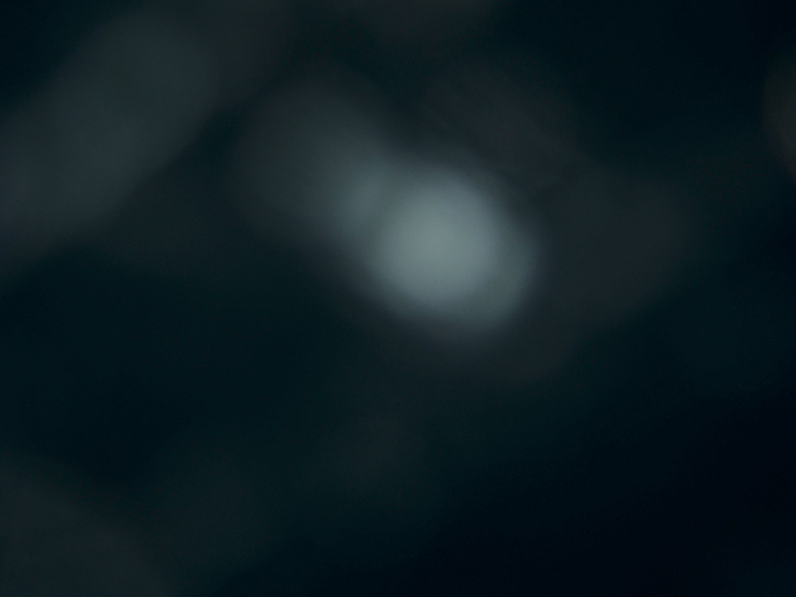
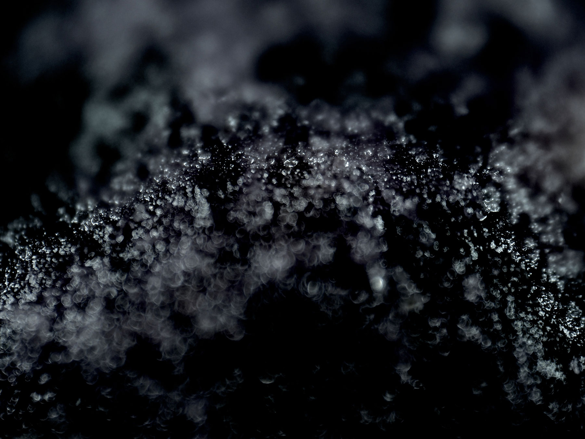

Rote Productions releases audio recordings, graphic design, video compositions, and other works. We are currently based in New York City.
This label is interested in testing the boundaries and contradictions in music and design making. We are completely against the idea of intellectual property and support copying so if you have a copy feel encouraged to distribute it. *
Just keep in mind that releases are made dealing with the specificity of each format and its possibilities (Cassette, CD, 12", 7", Booklets, ...). *
* See mattin.org/recordings
-

-
 Kutsal Sümük — Ytterbium
Kutsal Sümük — Ytterbium
ROTE001
Side A
01. Enki
02. Buried in the Firmament
03. Untitled
04. Last Supper
05. The Eroding Self
06. Hanged Drawn & Quartered
07. Spongiform
08. Ytterbium
Side B
08. Muibretty
07. Mrofignops
06. Deretrauq & Nward Degnah
05. Fles Gnidore Eht
04. Reppus Tsal
03. Deltitnu
02. Tnemamrif Eht Ni Deirub
01. Ikne
17 June 2012
38 minutes
C60 Pal Type Recording
Black laser print on transparency film
⎘
-

-

Rote — Container
ROTE003
Contents
01. css
02. fonts
03. img
04. js
05. index.html
2.4MB
.zip and tar.gz
⎘
- 
-
Rote Productions
319 Lafayette St #210
New York, NY 10012
USA